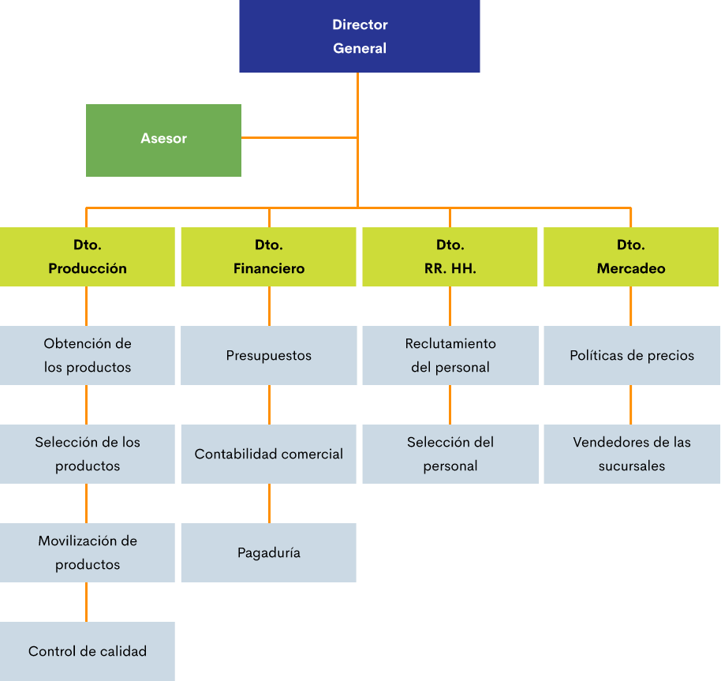
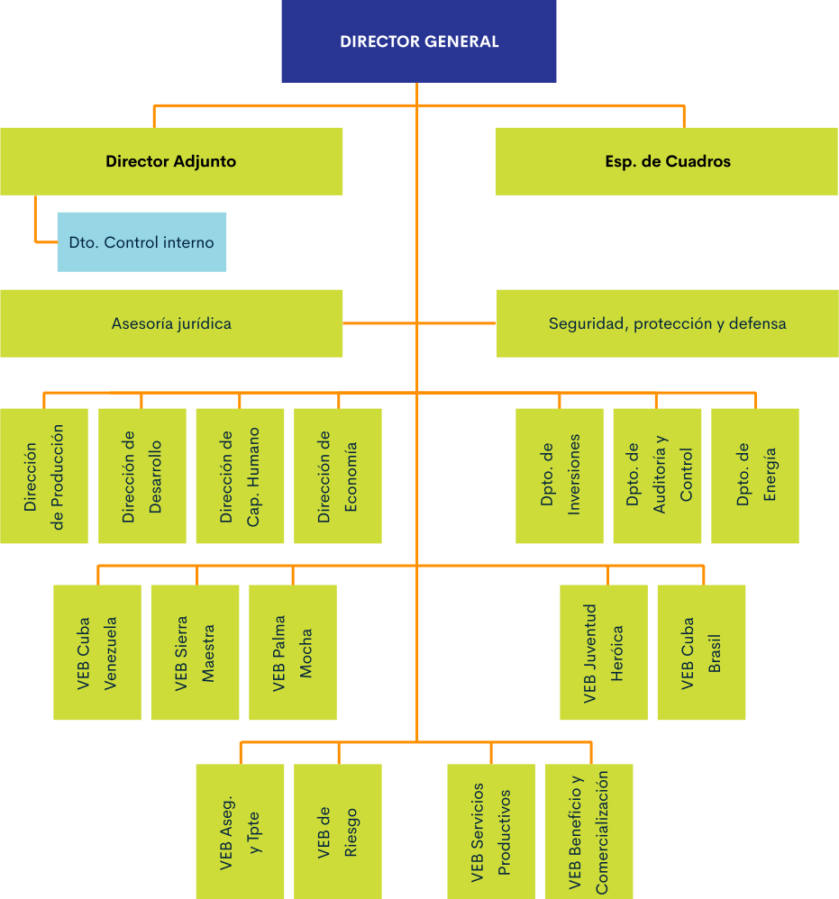
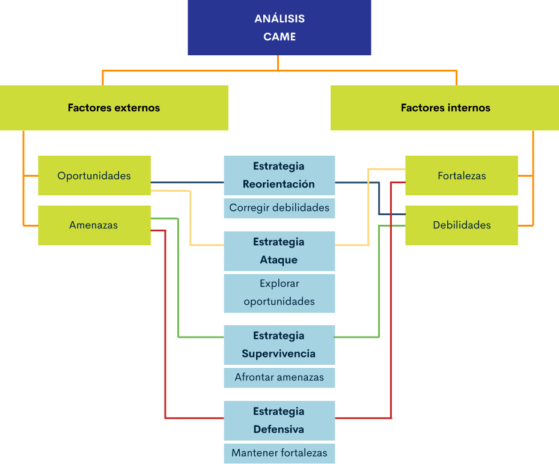
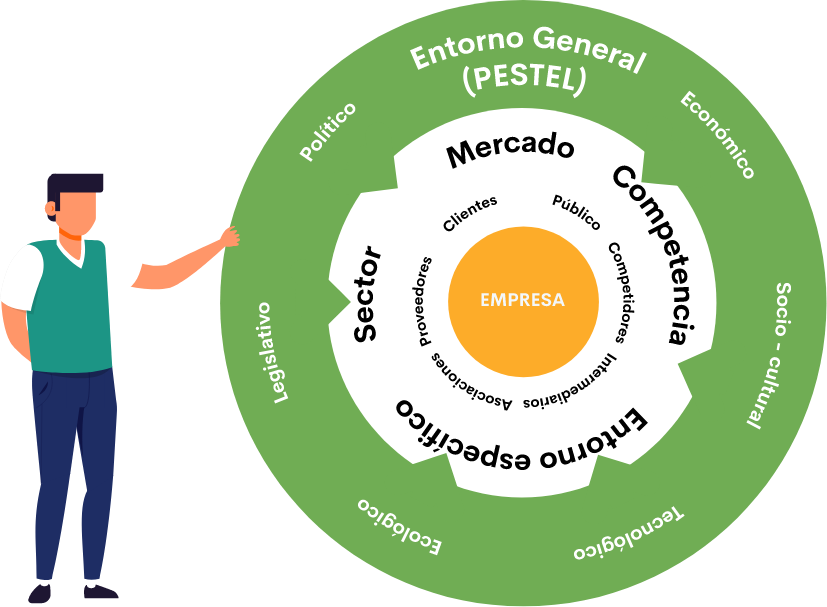
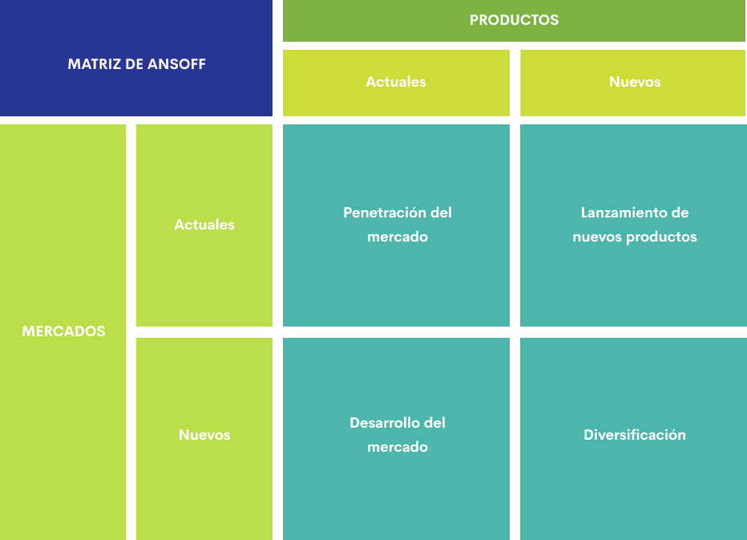
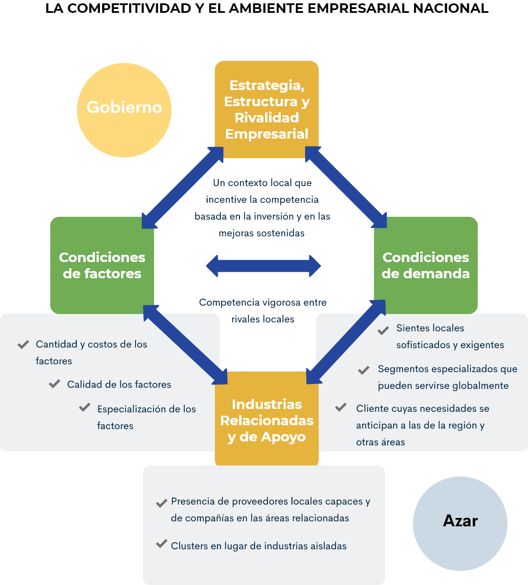
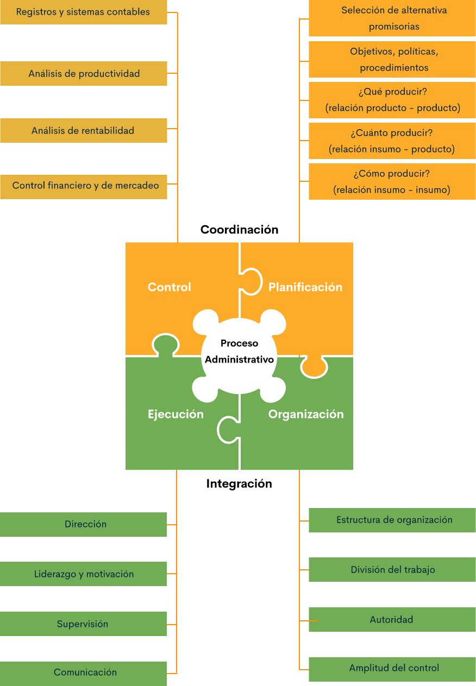
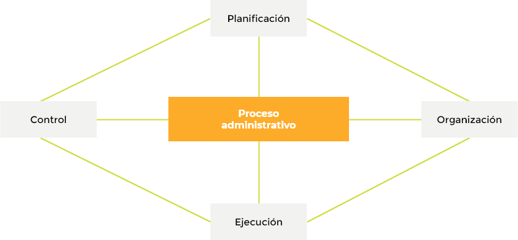

1. Llave de acceso para llegar a mercados verdes de un sistema productivo
Como parte esencial del proceso de certificación, trazabilidad, registros, indicadores de producción y software; es necesario entender primero la definición de qué es un sistema de producción agropecuaria. Este se puede definir como el conglomerado de predios individuales, cuya actividad económica realizada, es la misma actividad de subsistencia y limitaciones familiares similares. En la actualidad, para producir alimentos para mercados verdes se hace necesario diseñar estrategias de desarrollo en cada uno de los sistemas agropecuarios.
Por lo anterior, se hace necesario conocer a través de los siguientes gráficos, el proceso tanto para la producción agrícola, como pecuaria:
Producción agrícola
En este primero, se observa un modelo tecnificado de producción agrícola, en el que se evidencian algunas de las principales labores que se deben realizar en el desarrollo del proceso productivo como son: labranza, siembra, mantenimiento del cultivo, riego, cosecha y poscosecha.
Producción pecuaria
En este segundo ejemplo, se muestra un modelo de producción pecuaria, en el que se identifica una combinación de actividades de manejo, alimentación, sanidad, etc. Las cuales se realizan dentro de cualquier explotación de animales domésticos, cuya finalidad es producir: carne, leche huevos, semoviente para cría, engorde, pie de cría, etc. Para ser aprovechados directamente por el hombre y obtener beneficios económicos por su comercialización.
1.1 Estándar de certificación
La certificación es el paso inicial al momento de realizar un proceso normativo de productos agrícolas que luego llegan a un organismo de certificación. Se debe tener en cuenta que para ello, se debe cumplir con unos estándares y una serie de acciones.
Las cuales explica la FAO en detalle, a través del siguiente artículo
1.2 Trazabilidad
Por trazabilidad se entiende el conocimiento que se tiene mediante registros de la información del producto dentro de toda su cadena de producción, transformación y distribución. En síntesis, es saber de dónde viene y para dónde va un producto, de que está hecho y quién lo produce, hasta llegar al consumidor final durante todo su recorrido.
A la hora de implementar un sistema de trazabilidad, es necesario crear herramientas de recolección de datos. Estas deben obtener y registrar la información sobre las materias primas utilizadas, los datos de la planta en la que se fabrica, el almacenamiento y la distribución. Un sistema de trazabilidad debe ser eficiente y capaz de ofrecer la información histórica del producto, su ubicación y la trayectoria de manera exhaustiva y correcta.
Para dar inicio a un proceso de implementación de un sistema de trazabilidad en la producción agropecuaria, se debe contar con los siguientes elementos:
Sistema de identificación
Los sistemas de identificación son uno de los componentes básicos de cualquier seguimiento de la trazabilidad en el ámbito agroempresarial. Mediante estos sistemas, se hace posible la identificación de los productos, ya sea de forma individual o lotes de producción. Igualmente, permite la identificación de los embalajes, logística de almacenamiento y distribución. Esto se realiza de manera habitual utilizando códigos de barras o indicativos que llevan los productos al momento de realizar el embalaje. Con esto, se asegura el control de la trayectoria hasta el final del proceso.
Cada empresa es libre de elegir el sistema de identificación más adecuado para sus características. De igual forma, puede seleccionar el tipo estándar de codificación que mejor se ajuste a su producción y comercialización.
Para que el sistema de identificación funcione correctamente se deben utilizar herramientas tecnológicas de información y las telecomunicaciones que faciliten el funcionamiento de la empresa agropecuaria.
Sistema para la captura de datos
Al momento de implantar un sistema de trazabilidad, es fundamental utilizar algunas herramientas de captura de datos, las cuales deben obtener y registrar la información sobre las materias primas utilizadas, los datos de la planta en la que se fabrica y los datos de la gestión de almacenes. Un buen sistema digital le va a permitir a cada individuo dentro de la cadena de suministros, adjuntar datos pertinentes o realizar operaciones en tiempo real sobre algunos productos que lo requieran.
Software para la gestión de datos
Sin desconocer la importancia de los sistemas anteriormente mencionados, en este punto se debe obtener información de importancia dentro de un proceso de trazabilidad, dándole uso adecuado a esta información. Por ello, es fundamental la utilización de un software especializado que permita la gestión correcta de todos los datos acumulados, su análisis y su posterior administración.
Mediante el software se permite almacenar la información que se ha capturado e interactuar con los sistemas de gestión empresarial, suministrando la información impresa en tirillas de etiquetas y códigos de barras o grabando en un chip de tipo RFID, que permita identificar y hacer seguimiento remotamente, mediante una señal de radio, al objeto que se está observando.
Conociendo lo anterior, en el siguiente gráfico se observa la distribución final de productos agropecuarios, teniendo presente el seguimiento de la producción agrícola:
1.3 Registros
Primero que todo, se debe saber que en Colombia, la entidad encargada de ejercer el control técnico de la comercialización y usos de los productos agropecuarios, semillas, agroquímicos y fertilizantes, es el Instituto Colombiano Agropecuario (ICA).
Ahora bien, dentro de un proceso productivo agropecuario sin importar el nivel de organización empresarial, se debe contar con algún tipo de sistema de registros que suministre información relevante del estado de la actividad que se esté realizando en un momento determinado.
A continuación, se relaciona un documento del Ministerio de Agricultura en el que se describe en la sección de registros, el contenido que ilustra el tema y es de relevancia para su aplicación.
Este se halla directamente en el apartado 6. Registro de usuarios del servicio público de extensión agropecuaria
Debido a los trámites que son complejos al momento de solicitar algún tipo de registro sanitario ante el Instituto Nacional de Vigilancia de Medicamentos y Alimentos (Invima) -entidad facultada por la normatividad colombiana en expedir registros nuevos productos o renovar los existentes-, los pequeños y medianos productores agropecuarios en su gran mayoría, desisten de su interés en solicitar un registro y optan por producir alimentos que no requieren registro sanitario y pueden ser comercializados de manera libre en reducidos nichos de mercado, como son las frutas, los vegetales, el huevo, etc. Mientras que para llegar a mercados verdes o a grandes superficies, los emprendedores deben adjuntar información del producto como es: ficha técnica, fecha de vencimiento, composición nutricional, entre otros y presentar su correspondiente registro sanitario.
En las actuales condiciones de los productos sobresalientes en la economía campesina y en la gastronomía cultural de Colombia, no existe una norma que exija que estos productos deban tener registro sanitario. Un ejemplo de ello es la panela, si esta se comercializa como producto artesanal no requiere de un registro; pero, si se desea hacerlo con adición de sabores u otro tipo de componentes, en ese caso si es necesario un registro sanitario.
En Colombia, hay tres tipos de registros: el registro sanitario, la notificación y el permiso sanitario. Estos son solicitados por el campesino o microempresario dependiendo del tipo de producto y el riesgo a la salud pública, con costos individuales.
Obtener registro sanitario, permiso sanitario, notificación sanitaria para alimentos importados de alto, medio y bajo riesgo para la salud con destino al consumo humano, son renovables, la vigencia del registro sanitario es de 5 años, el permiso sanitario es de 7 años y la notificación sanitaria es de 10 años. (SUIT, 2020)
Para cada uno de ellos existe una lista de chequeo que se debe diligenciar según sea el tipo de registro solicitado en el invima, lo cual se realiza a través del formato único de alimentos, registros sanitarios o permiso sanitario o notificación sanitaria y tramites asociados (resolución 2674 de 2013, resolución 3168 de 2015). documento que se encuentra relacionado en los materiales complementarios.
1.4 Indicadores
Hacen referencia a los indicadores utilizados dentro de un sistema productivo del sector agropecuario para evaluar, analizar y hacer seguimiento a los procesos de productivos descritos en los objetivos estratégicos. Para hacer más fácil su comprensión, se pueden agrupar en tres tipos: indicadores de desempeño, indicadores de gestión e indicadores sociales; los cuales son utilizados comúnmente para evaluar el éxito y desarrollo empresarial.
Hay que resaltar que, dentro de los sistemas productivos del sector agropecuario, la gran mayoría se explotan a nivel rural y se hacen de forma extensiva, carentes de tecnología y de acuerdo a costumbres culturales locales. Los sistemas productivos son en la actualidad el eje del desarrollo rural, municipal y regional, conformando cadenas productivas que dan valor agregado a los productos y facilitan su comercialización e incursión a nuevos nichos de mercado; esto con el beneficio de realizar actividades de trasformación agroindustrial y agroalimentaria de productos con alta demanda nutricional. Desconociendo en algunos casos los tipos que permiten al emprendedor evaluar el estado de la empresa, sin afectar adicionalmente los ecosistemas, preservando el medio ambiente, volviendo sostenible y sustentable la empresa agropecuaria.
En todo proceso productivo de carácter agropecuario, el objetivo principal trazado por el emprendedor es obtener un alto margen de rentabilidad económica en el proceso productivo, desconociendo la importancia que tienen los tipos de indicadores planteados anteriormente. Su importancia radica en que son necesarios para medir su sostenibilidad o prevalencia en el mercado y su capacidad financiera de ser competitiva dentro de un nicho de mercado, el cual es cambiante permanentemente.
A continuación, se describe cada uno de los tres tipos de indicadores que son relevantes para el crecimiento, sostenimiento y prevalencia de una empresa, cumpliendo con ello con la normatividad vigente:

Indicadores de desempeño.
Indicadores de gestión.
Indicadores sociales.
1. Indicadores de desempeño
Conocidos también como indicadores de gestión. Su finalidad es medir si se está cumpliendo con las metas y objetivos estratégicos específicos, trazados por la empresa. A su vez, se pueden subdividir en indicadores de alto nivel direccionados a observar el desempeño general de la empresa, mientras que en los de bajo nivel su enfoque son los procesos o empleados de cada área, como pueden ser: ventas, mercadeo o atención al cliente.
Una empresa del sector agropecuario debe centrar sus metas teniendo en cuenta su desempeño en el sector y establecer indicadores bien diseñados con instrumentos esenciales que le permitan trasegar con una excelente imagen corporativa y saber en algún momento si la empresa está donde debería estar. Estos indicadores de gestión son insumos esenciales para la toma de decisiones y contribuyen notoriamente en mejorar el desempeño organizacional.
Por otra parte, los indicadores de desempeño son muy importantes y son utilizados como medio de motivación de los trabajadores de la empresa, con respecto a las metas propuestas por la organización.
Una cultura que apoya y motiva a todos aquellos que hacen parte de ella está destinada a lograr mejores resultados que una que no lo hace. En este sentido, el seguimiento de los indicadores de gestión permite reconocer el trabajo arduo de los empleados y garantizar su involucramiento y su sentido responsabilidad. (Roncancio, 2018)
2. Indicadores de gestión
En este segundo componente de indicadores, se describen los elementos que se usan por el emprendedor para entender si la empresa está por el camino correcto y va acorde con las estrategias planteadas por esta y la normatividad vigente. Con esto se logra evaluar si la empresa está teniendo éxito en el mercado, va por el camino correcto y se está adaptando a los permanentes cambios del mercado. Estos factores deben ser monitoreados, registrados y analizados en tiempo real. Con esta estrategia, se debe poder corregir su rumbo rápidamente y adaptarse a las condiciones cambiantes del mercado, al cumplimiento de metas y el bajo nivel de desempeño.
3. Indicadores sociales
Corresponden a valorar la importancia del individuo y su relación con el entorno. Todos los seres humanos son sociables por naturaleza y requieren relacionarse con los demás individuos para prevalecer en un entorno social que debe ser equitativo y sustentable.
Para Gertler (1994) citado por Chiappe (2002), a través del portal web Infoagro (s.f.), la sostenibilidad es “primero y antes que nada, un tema social”. Profundizando esta aseveración, se puede afirmar que los distintos componentes del objetivo mayor, remiten finalmente a la calidad de vida y en última instancia a la vida misma. La equidad aparece, empero, con un efecto más directo en el aspecto social. Llevado a nivel de comunidad o sociedad, adquiere una jerarquía superior a los demás atributos, en términos de su aportación al medio que conforma. Cuando el objetivo es social, la característica predial es un medio. La interface de objetivos prediales / sociales, se aproxima al concepto de multifuncionalidad de las unidades.
La equidad social no igualdad social, se puede entender como calidad de vida entre los miembros de una comunidad, en las que están satisfechas las demandas actuales y futuras de un individuo y su familia dentro de un espacio geográfico desarrollado y organizado con políticas claras que los beneficien. La inequidad, es actualmente lo sobresaliente en una economía globalizada que contribuye en volver insostenible cualquier emprendimiento.
Es el obstáculo más fuerte para lograr la aplicación de conocimientos científicos y tecnológicos ya existentes, para el Desarrollo Sostenible. El solo análisis de esta hipótesis, podría hacer una contribución valorable a lo que Gallopin y col. (2003) llaman “Economía política de la insostenibilidad”. El abordaje priorizado de este tema aparece como obvio, si tenemos en cuenta que el 20 % más rico de la población mundial absorbe el 83 % de la renta mientras que el 20 % más pobre, solo accede al 1,4 % (Held y Mc Grew, 2003, citado por el portal web Infoagro, s.f.).
A modo de conclusión, no se puede prescindir de modelos prospectivos de ruralidad, para analizar y ponderar la evolución social de las comunidades agrarias. El contenido más representativo de la sustentabilidad social es el de la Equidad, como generadora de calidad de vida. Su implementación, intra e intergeneracional, acusa alta afinidad con el desempeño sustentable de las componentes ecológicas, económicas e institucionales. Varios autores coinciden en asumir esta herramienta de progreso, no como una mera concesión a los más necesitados, sino como un derecho ciudadano que el Estado debe proteger. (Infoagro, s.f.)
1.5 "Software" de administración de la producción
A continuación, se relacionan diversos softwares que son útiles para registrar, clasificar, analizar y evaluar información relevante en un proceso productivo y administrativo de una empresa agropecuaria. Todo ello, para hacerles seguimiento a sus indicadores estratégicos, ajustando el elegido con los ítems necesarios para cada unidad productiva y requerimientos de la empresa.
Dichos "softwares" son:
TaurusWebs
OvisWebs
SuinoWebs
ArcGIS
2. Diligencia del talento humano
2.1 Diagnóstico y necesidades de talento humano
Según Chiavenato (2002), “la gestión del talento humano se define como un conjunto de actividades relacionadas con la organización laboral en su interacción con las personas, a través de actividades como: planeación estratégica del personal, selección, contratación, evaluación de desempeño y comunicación”.
Para establecer las necesidades del talento humano requerido en una empresa agropecuaria o dentro de un sistema productivo en Colombia, lo primero es identificar los tipos de explotación existente. Este análisis se realiza teniendo en cuenta su desarrollo tecnológico y tamaño de la explotación. Este análisis se puede agrupar en dos sistemas: 1. Sistema de explotación extensiva y 2. Sistema de explotación intensiva.
Sistema de explotación extensiva
La explotación agropecuaria extensiva es un sistema de producción a corto plazo, el cual se realiza maximizando la capacidad para la producción de productos alimenticio sin tener en cuenta aspectos técnicos, medioambientales y preservación del medioambiente. Se realiza utilizando los recursos naturales presentes en el lugar, incorporando agroquímicos, sistemas de riego y drenaje que afectan directamente los ecosistemas. De todo esto, sobresalen las explotaciones tradicionales en todos los renglones de la economía informal del sector agropecuario.
Sistema de explotación extensiva
Por otra parte, la explotación agropecuaria intensiva se dedica a producir la misma cantidad de alimentos, utilizando menos recursos y optimizando su utilización. En ese tipo de explotación agropecuaria se incorporan aspectos técnicos, financieros, medioambientales y sociales que hacen más rentable su explotación.
Igualmente, se pueden observar los requerimientos del talento humano, desde el enfoque económico existente en el sector agropecuario, aglutinados en dos grupos: A. Explotación Agropecuaria Formal y B. Explotación Agropecuaria Informal.
Explotación agropecuaria formal
Para las entidades gubernamentales son todas las empresas que, sin importar su tamaño, ya sea unipersonal o empresarial, se encuentran registradas y legalizadas ante los organismos establecidos para ello. Allí, se reportan todos sus movimientos económicos y financieros; además, se llevan registros de: costos, producción, clientes, proveedores con otorgamiento de licencia para poder funcionar.
Explotación agropecuaria informal
Este tipo de economía es de mayor impacto social dentro de los sectores económicos y se refiere a que las actividades ejecutadas allí son de carácter informal. En el sector agropecuario se observa con mayor claridad en aquellos grupos poblacionales que su economía es familiar, caracterizándose por ser desarrolladas en condiciones precarias, con bajos recursos y sin ningún tipo de tecnología e ingresos reducidos. Lo anterior, con el agravante que las pocas ganancias obtenidas y que son destinadas en su orden a cubrir obligaciones bancarias, compra de alimentos necesarios en la reducida canasta familiar y porcentaje menor, se deja para reinvertir.
En cada región del territorio existen épocas de cosecha, de acuerdo a los ciclos productivos, algunos medianamente tecnificados y otros desarrollados en forma cultural. Lo anterior, llevándose a cabo sin tecnologías adecuadas y continuando con la vocación regional en actividades agrícolas como monocultivo de papa, maíz, huertas caseras o dentro de la producción pecuaria a producir: leche caliente, huevos y lácteos (algunos realizan procesos agroindustriales trasformando leche en queso).
La economía informal también llamada economía oculta o en las sombras, se presenta en todos los países del mundo, siendo mayor su peso en economías menos desarrolladas. En el caso Latinoamericano, la economía informal es notoria a simple vista en las calles de las ciudades en el desarrollo del comercio informal y por esta razón, la percepción de las personas se reduce a la informalidad en términos de ventas ambulantes cuando el fenómeno va más allá de estas. El presente artículo contiene un estudio de la definición de economía informal y las distintas asociaciones hechas al mismo, para continuar por sus causas y consecuencias. Posteriormente se describe la situación actual de la economía informal en la economía colombiana y se describe la Ley de Formalización y Generación de Empleo, que fue un intento importante del gobierno para reducir la informalidad. Los autores revisan la situación de la informalidad al momento de la expedición de la Ley y la comparan con la actual para finalmente proponer alternativas adicionales que permitan una reducción aún mayor de la informalidad en la economía colombiana. (Salcedo, Moscoso y Ramírez, 2020)
Conociendo estos sistemas de explotación, es importante saber que para que el sector agropecuario sea productivo económicamente y sostenible social y medioambientalmente y además pueda aprovechar las oportunidades que se tiene con los tratados de libre comercio, debe producir alimentos de excelente calidad con precios competitivos, los cuales generen ingresos suficientes a los productores y les garantice una vida digna a ellos y a sus familias.
Necesidades del talento humano
Algo importante que destacar en este proceso, es que actualmente las empresas cuentan con un departamento de talento humano, ya que es pieza clave para el lograr los objetivos trazados. El propósito de esta dependencia es mantener a todos sus trabajadores comprometidos y motivados con las políticas y los objetivos de la empresa para la consecución del éxito. El ambiente diario de trabajo, influye en las personas e interfiere en la parte física, emocional y mental de los trabajadores. Algo fundamental en el sector agropecuario para mejorar su rentabilidad, es implementar protocolos y normas del buen trato a los empleados o trabajadores de la finca.
El departamento de gestión del talento humano en las empresas, se centra en la idea de que el éxito de la compañía depende en gran parte del talento humano de todas sus dependencias y las habilidades de sus empleados, creando nuevas estrategias de negocio, generando estrategias de mejora y administración del recurso humano. Es fundamental para el éxito empresarial generar colaboración y confianza del personal, así como respeto y buenas relaciones laborales.
De igual manera, es importante desarrollar políticas como: implementar carrera administrativa, rotación de actividades, fomentar el trabajo en equipo, organización del trabajo, calidad de vida laboral, sistemas de compensación, etc.; dirigidas a los trabajadores que son considerados como el recurso más importante de la empresa, fortaleciendo de esta manera el vínculo laboral y contribuyendo en la consecución de los objetivos.
Además, no se puede dejar de mencionar la importancia que tienen algunas actividades clave en la interacción permanente con su entorno, las cuales son parte esencial para su funcionamiento; encontrándose: supervivencia empresarial, crecimiento empresarial, rentabilidad empresarial y productividad; así como calidad de los productos y servicios, reducción de costos, participación en el mercado, nuevos clientes, competitividad e imagen corporativa. Ofreciendo de esta manera salarios justos, estabilidad, seguridad social, calidad de vida, satisfacción personal, respeto, mejores oportunidades, capacitación, autonomía y participación.
2.2 Proceso administrativo
Todo proceso de selección tradicional para un cargo, inicia con el análisis de la hoja de vida o CV, seguido de una entrevistas y recomendaciones personales.
En la actualidad, las técnicas y herramientas que se utilizan para la contratación del personal idóneo requerido dentro de una explotación agropecuaria en una economía informal, se basan en la experiencia. Con la utilización de esta herramienta, el emprendedor se apoya en el juicio de las personas que tienen conocimientos previos y visión amplia del funcionamiento de la empresa.
En el sector formal, el departamento de recursos humanos es el encargado de realizar la convocatoria para la provisión del personal requerido. Dicha selección se hace mediante un proceso estructurado de selección, escogiendo uno dentro de la diversidad de métodos existentes.
Independientemente de la técnica para la selección del cargo que se requiera, a través de estas no se miden valores absolutos; por el contrario, se busca obtener un estimativo que permita seleccionar al que mayor puntuación obtenga. Se pueden agrupar las técnicas de necesidades de recursos humanos en: 1. Basadas en la experiencia 2. Basadas en la tendencia y 3. Basadas en otros factores. Así lo explica Ledezma (2017), quien las desglosa de la siguiente manera:
Estas técnicas se apoyan en el juicio de las personas con conocimientos y visión amplios, principalmente sobre las futuras necesidades de Recursos Humanos. Deben implementar un diseño que les permita detectar las necesidades de un área específica. Se incluyen:
Estimaciones de la gerencia: son los gerentes los que realizan las estimaciones de las necesidades futuras del personal, basándose en la experiencia. Pueden proceder de la alta gerencia y comunicarse hacia las áreas internas o de directivos de menor rango y comunicarse a sus supervisores para su revisión.
Técnica de Delphi: en esta técnica se constituye un panel de expertos y se pide a cada uno de los miembros que haga una estimación independiente de la demanda futura, junto con los correspondientes supuestos. Posteriormente, un intermediario presenta las estimaciones y supuestos de cada experto, para su revisión y consenso. Los cálculos de los grupos son analizados mediante la intervención del Dpto. RRHH para su posterior verificación y aprobación por la Alta Gerencia – Dirección.
Planificación vinculante de la planilla: se basa en dos premisas fundamentales: 1. Una organización es vital desde el punto de vista del recurso humano, cuando cuenta con personas dotadas de alto potencial y con reservas aptas para futuras sustituciones. 2. Una organización se estanca, cuando no cuenta con personal calificado y preparado, así como, ausencia de reservas profesionales.
El resultado final del análisis de disponibilidades es un Índice de Vitalidad de la Organización (IVO), que puede usarse como medida general de la vitalidad de sus recursos humanos. Se calcula a partir del número de personas adecuadas para ser ascendidas y del número de reservas disponibles.
Análisis de capacidades y experiencias: es necesario realizar una cuidadosa evaluación de los cambios futuros que se deriven de los planes estratégicos de la empresa, en el conjunto de capacidades y habilidad actuales, en la medida en que el desarrollo de producto y mercado proyectados y la introducción de nueva tecnología que afecte el tipo de personal necesario. Es importante revisar todos los aspectos del plan corporativo para evaluar sus implicaciones en el empleo de recursos humanos.
Por necesidades futuras: esta manera de evaluar las cantidades requeridas es más sistemática que las anteriores se hacen estudiando las razones existentes entre niveles de actividad y números de empleados, proyectando luego las necesidades futuras en función de los cambios en niveles primarios de actividad o en el número de empleados. Puede determinarse si habrá o no un aumento de productividad.
Por estudio de trabajo: implica el uso de técnicas de medición de trabajo que indiquen en cuanto tiempo se deberá realizar una operación o grupo de operaciones y obtener el número requerido de trabajadores, permitiendo el descanso, evaluando la fatiga, ausencia y enfermedad. Permite producirse estándares de trabajo, aplicando esos estándares a los volúmenes de trabajo proyectados.
Extrapolación: mediante esta técnica se proyectan o prolongan las tendencias del pasado. Lo requerido mensual en un periodo determinado permitirá determinar la proyección del año.
Indexación: se debe hacer coincidir la tasa de crecimiento o descenso en el empleo con un índice determinado. Ej. Relación de empleados en las áreas de producción y las cifras de ventas, en efectivo o unidades.
Métodos estadísticos: utiliza datos históricos para proyectar la demanda futura. Entre las técnicas estadísticas tenemos:

Análisis de series temporales: se utiliza niveles históricos de personal para proyectar las necesidades futuras de los recursos humanos. Se estudian los niveles históricos de personal para aislar las variaciones estacionales y cíclicas, las tendencias a largo plazo y los movimientos aleatorios.
Ratios de productividad: se utilizan datos históricos para examinar los niveles de un índice de productividad.
Análisis de presupuesto y evaluación: elaborar presupuestos detallados y planes a corto y largo plazo, revelará las autorizaciones financieras para contratar más personal o reducirlos.
Nuevas operaciones: emplear el análisis de las nuevas operaciones, requiere que se calculen las necesidades de recursos humanos en comparación con otras empresas de operaciones similares.
Modelos computacionales: son una serie de fórmulas matemáticas que emplean simultáneamente la extrapolación, la indexación, los resultados de sondeo y los cálculos en las fuerzas de trabajo.
Antes de seleccionar el sistema se requiere un análisis de costo beneficio, para elegir el sistema que mejor se adapte a las necesidades y recursos de la organización.
2.3 Estilos de dirección
La administración de una empresa agropecuaria está enfocada directamente en la toma de decisiones en los diferentes niveles de la organización, esto para el cumplimiento de las metas y objetivos. En este orden de ideas, el emprendedor o quien administrativa la unidad productiva debe tener autonomía, liderazgo en la toma de decisiones y manejo de los recursos económicos, físicos y humanos. Además, se debe tener autoridad, responsabilidad, coordinación y resolución de problemas, los cuales se presenten en las diferentes unidades de la empresa agropecuaria.
De allí que sea fundamental para el departamento de recursos humanos o el emprendedor líder, seleccionar un buen administrador que realice su función de manera efectiva. Por medio de la diligencia correcta de un administrador es que se hace que el equipo de trabajo funcione de acuerdo a los recursos existentes.
Como síntesis, se puede inferir que con una dirección exitosa se logra un uso eficiente de los recursos y con la identificación pertinente de problemas se realiza una adecuada toma de decisiones. Mientras que cuando la dirección es defectuosa, los recursos se desperdician, las responsabilidades se diluyen y los problemas no encuentran solución.
La administración de una explotación agropecuaria puede estar a cargo del emprendedor; mientras que para producciones agropecuarias tecnificadas se hace necesario la presencia de una cadena de mando que incluya un gerente y un jefe de producción, quienes encarguen de los trabajadores técnicos de cada unidad.

Algunos de los problemas de las pequeñas fincas surgen cuando el propietario asume la dirección de manera muy informal, limitándose a “dar órdenes” sin analizar mediante herramientas administrativas la situación de la empresa para tomar decisiones acertadas. Tenemos en este panorama, diferentes categorías de propietarios entre los que se destacan los que toman decisiones guiados por caprichos, por “corazonadas”, por sugerencias de otro productor o por presión de los subalternos. (Finca y campo, 2020)
En las condiciones actuales de la economía, es fundamental que los productores agropecuarios adquieran un cambio de cultura empresarial y procedan a darle importancia a los procesos administrativos, técnicos, sociales, ambientales y financieros; con los parámetros de manejo y liderazgo empresarial.
2.4 Herramientas gerenciales
Son consideradas como el conjunto de acciones necesarias para el funcionamiento técnico y administrativo de una empresa, facilitando con ayuda de los funcionarios el cumplimiento de sus objetivos. Igualmente, consistente en guiar a los departamentos de la empresa hacia el logro de metas, asegurando el correcto accionar de las operaciones y actividades de la empresa, al adoptar decisiones estratégicas en la distribución y asignación de recursos, el control de la producción, distribución y comercialización en el contexto administrativo.
La finalidad de la jerarquización empresarial se da por medio de herramientas claves que hacen cumplir los objetivos propuestos y alcanzar las metas estratégicamente diseñadas, dentro de las que se tienen: planificación, definir objetivos, tener el control, diseñar acciones correctivas, comunicar resultados, motivar, evaluar procesos y capacitar el personal, entre otros.
A continuación, se describen las herramientas gerenciales más utilizadas para realizar estos procedimientos:
Matriz DOFA
Es una herramienta gerencial que sirve para realizar un diagnóstico y conocer la situación real en que se encuentra una empresa y así poder planificar estrategias para tomar decisiones hacia cuál es la alternativa que mejor le conviene a la organización. Esta matriz está compuesta por dos elementos internos que son: debilidades y fortalezas y dos externos: oportunidades y amenazas.
Con esta matriz se logra descubrir qué funciona bien y qué se puede mejorar de una empresa. Igualmente se puede saber de dónde se parte y a dónde se quiere llegar. Se puede aprovechar este análisis para obtener el mejor resultado de la organización empresarial minimizando su fracaso, eliminando riesgos y peligros existentes.
Son muchas las ventajas que se tienen al aplicar esta herramienta para hacer un análisis integral de la empresa, ya que la matriz DOFA permite identificar con fácil comprensión cómo funciona su negocio, permitiéndole tener una óptica global dentro de un reglón de la economía. Identificando cada una de las debilidades, oportunidades, fortalezas y amenazas del negocio, el equipo gerencial tiene la responsabilidad de realizar inmediatamente la mejora del proceso que tenga deficiencias.
Balanced Scorecard
De acuerdo a Roncancio (2018):
El Balanced Scorecard o conocido también como Cuadro de Mando Integral, es una metodología de gestión estratégica utilizada para definir y hacer seguimiento a la estrategia de una organización. Esta metodología creada por Robert Kaplan y David Norton, permite estructurar los objetivos estratégicos de forma dinámica e integral para ponerlos a prueba según una serie de indicadores que evalúan el desempeño de todas las iniciativas y los proyectos necesarios para lograr su cumplimiento satisfactorio.
Los propósitos con los que se construye un Balanced Scorecard son:
Describir y comunicar su estrategia.
Medir su estrategia.
Hacer un seguimiento de las acciones que se están tomando para mejorar sus resultados.
Scorecard, la definición de la estrategia de una organización debe realizarse teniendo en cuenta cuatro perspectivas. Dentro de cada perspectiva puede adicionar los objetivos estratégicos asociados.
Para la mayoría de las organizaciones con fines de lucro, el dinero es una prioridad. Por lo tanto, para estas organizaciones la perspectiva más importante tiene que ver con los objetivos financieros. Esencialmente, cualquier objetivo clave relacionado con la salud financiera y la rentabilidad de la organización puede incluirse en esta perspectiva. Los ingresos y las ganancias son objetivos obvios que la mayoría de las organizaciones enumeran en esta perspectiva. Otros objetivos financieros podrían incluir:
Generar ahorro de costos y eficiencia.
Mejorar el margen de rentabilidad.
Aumentar las fuentes de ingresos.
Esta perspectiva se centra en los objetivos estratégicos que están relacionados con los clientes y el mercado. En otras palabras, para lograr sus objetivos financieros, ¿exactamente qué necesita lograr en términos de sus clientes y mercados?
Incluidos en esta perspectiva puede encontrar objetivos estratégicos para:
Servicio al cliente y satisfacción.
Participación en el mercado.
Reconocimiento de marca.
¿Qué procesos necesita implementar para cumplir sus objetivos estratégicos financieros y relacionados con los clientes? Esa es la pregunta que esta perspectiva pretende responder. Aquí debe establecer metas y objetivos operativos internos o, en otras palabras, definir qué procesos requieren actualmente la organización y qué debe hacer para mejorar su desempeño.
Algunos ejemplos de objetivos de la perspectiva de procesos internos son:
Mejoras en los procesos.
Optimización de la calidad.
Aumentar la utilización de la capacidad instalada.
Mientras que la tercera perspectiva se centra en el lado de los procesos concretos, la última perspectiva considera drivers de desempeño más intangibles. Debido a que cubre un espectro tan amplio, esta perspectiva a menudo se divide en los siguientes componentes:
Capital humano: habilidades, talento y conocimiento.
Capital de información: bases de datos, sistemas de información, redes e infraestructura tecnológica.
Capital organizacional: cultura, liderazgo, alineación de empleados, trabajo en equipo y gestión del conocimiento.
Arthur M. Schneiderman, quien fuera el creador del primer Balanced Scorecard dentro Analog Devices, cuenta que el primer Scorecard adquirió su balance entre métricas financieras y no financieras, a raíz de una discusión con Jerry Fishman, el difunto COO de Analog Devices. A pesar de que originalmente el Scorecard estaba desbalanceado para incluir sólo métricas no financieras, a raíz de que para la alta gerencia era esencial contar con las métricas financieras, se estableció un balance “desbalanceado” en el cuál se mantenía una proporción de 1:6 entre indicadores financieros y no financieros.
Diagrama causa-efecto:
Por su parte, sobre esta herramienta, a través del portal web Progressa Lean (2014) se menciona:
El diagrama Causa-efecto es llamado usualmente Diagrama de “Ishikawa” porque fue creado por Kaoru Ishikawa, experto en dirección de empresas, quien a su vez estaba muy interesado en mejorar el control de la calidad. Se trata de una herramienta para el análisis de los problemas que básicamente representa la relación entre un efecto (problema) y todas las posibles causas que lo ocasionan. Denominado también como diagrama de Espina de Pescado por su parecido con el esqueleto de un pescado.
El diagrama causa-efecto está compuesto por un recuadro que constituye la cabeza del pescado, una línea principal, que constituye su columna, y de 4 a más líneas apuntando a la línea principal formando un ángulo de unos 70º, que constituyen sus espinas principales. Cada espina principal tiene a su vez varias espinas y cada una de ellas puede tener a su vez de dos a tres espinas menores más.
Esquemáticamente el diagrama causa-efecto tiene la siguiente forma:
Es con diferencia, una de las herramientas más sencillas dentro de la mejora continua. Los pasos para su elaboración son los siguientes:
Constituir un equipo de personas multidisciplinar.
Partir de un diagrama en blanco. Lógicamente para ir rellenándolo desde cero.
Escribir de forma concisa el problema o efecto que se está produciendo (la utilización de la técnica de los 5w+2h nos será de mucha utilidad).
Identificar las categorías dentro de las cuales se pueden clasificar las causas del problema. Generalmente estarán englobadas dentro de las 4M (máquina, mano de obra, método y materiales).
Identificar las causas. Mediante una lluvia de ideas y teniendo en cuenta las categorías encontradas, el equipo debe ir identificando las diferentes causas para el problema. Por lo general estas causas serán aspectos específicos, propios de cada categoría, y que al estar presentes de una u otra forma están generando el problema. Las causas que se identifiquen se deberán ubicar en las espinas que confluyen hacia las espinas principales del pescado.
Preguntarse el porqué de cada causa, pero no más de 2 o 3 veces. En este punto el equipo debe utilizar la técnica de los 5 porqués. El objeto es averiguar el porqué de cada una de las causas anteriores. Como resultado se obtendrán una serie de subclases que constituirán las llamadas espinas menores.
Diagrama de Pareto
Es otra herramienta gerencial que dentro de su estructura denominada diagrama de Pareto, se convierte en un tipo especial de gráfica de barras, donde los valores graficados están organizados de mayor a menor. Se utiliza este diagrama para identificar los defectos que se producen con mayor frecuencia, así como las causas más comunes de los defectos o las causas más frecuentes de quejas de los clientes.
Siguiendo la descripción teórica de cada una de estas herramientas, es importante indicar lo que expone el portal web Minitab (2020), en donde de manera ejemplificada explica lo siguiente:
El diagrama de Pareto debe su nombre a Wilfredo Pareto y su principio de la "regla 80/20". Es decir, el 20% de las personas controlan el 80% de la riqueza; o el 20% de la línea de producto puede generar el 80% de los desechos; o el 20% de los clientes puede generar el 80% de las quejas, etc.
Ejemplo de un diagrama de Pareto
Un gerente desea investigar las causas de la insatisfacción de los clientes en un hotel determinado. El gerente investiga y registra las razones de las quejas de los clientes.
Por lo general, el eje Y de la izquierda es la frecuencia de ocurrencia, mientras que el eje Y de la derecha es el porcentaje acumulado del número total de ocurrencias. El eje X muestra las categorías de los defectos, quejas, desperdicios, etc.
¿Qué es un diagrama de Pareto ponderado?
Un diagrama de Pareto ponderado no solamente considera la frecuencia de ocurrencia, sino también su importancia. Un diagrama de Pareto ponderado puede explicar la gravedad de los defectos, o su costo o cualquier elemento al que desee hacer un seguimiento. Por ejemplo, supongamos que usted tiene 5 defectos de revestimiento a los que está haciendo seguimiento: arrugas, manchas, rayas, salpicaduras de sucio y burbujas.
Usted recolecta datos acerca de la frecuencia de la ocurrencia de defectos y el costo de reparar las unidades defectuosas. Un diagrama de Pareto ponderado puede cambiar su prioridad con respecto a los proyectos de mejora al considerar los datos basándose tanto en los datos de costo como de frecuencia. Por ejemplo, aún cuando las arrugas sean más frecuentes, son menos costosas de reparar que las salpicaduras de sucio, las cuales son una ocurrencia más rara. Al tener en cuenta tanto el costo como la frecuencia, usted comprenderá mejor el costo de una calidad deficiente (COPQ).
Diagrama de Pareto que considera solamente la frecuencia
Los defectos que ocurren con mayor frecuencia son las arrugas y las manchas. Basándose en esta información, probablemente decida desarrollar un proyecto de mejoras para reducir las arrugas y las manchas.
Diagrama de Pareto ponderado que considera el costo y la frecuencia
Los defectos más costosos son las rayas y las salpicaduras de sucio. Basándose en estos datos más informativos, usted decide que es mejor desarrollar un proyecto de mejoras orientado a reducir las rayas y las salpicaduras de sucio.
Elementos que hay que considerar cuando se utiliza un diagrama de Pareto
El diagrama de Pareto es fácil de entender y utilizar; sin embargo, es importante tener en cuenta lo siguiente:
Datos recolectados durante un corto período de tiempo, especialmente de procesos inestables, pueden llevar a conclusiones incorrectas. Debido a que los datos podrían no ser confiables, usted podría obtener una idea incorrecta de la distribución de defectos y causas. Cuando el proceso no está en control, las causas pueden ser inestables y los pocos problemas vitales pueden cambiar de una semana a la siguiente. Los períodos de tiempo cortos podrían no ser representativos de la totalidad de su proceso.
Los datos recopilados durante largos períodos de tiempo pueden incluir cambios. Busque en los datos estratificación o cambios en la distribución del problema en el tiempo.
Elija categorías cuidadosamente. Si su análisis de Pareto inicial no produce resultados útiles, es recomendable que se asegure de que sus categorías sean significativas y de que su categoría "otro" no sea demasiado grande.
Elija criterios de ponderación cuidadosamente. Por ejemplo, el costo podría ser una medida más útil para asignar prioridades en comparación con el número de ocurrencias, especialmente cuando difieren los costos de varios defectos.
Concentrarse en los problemas con la mayor frecuencia debería reducir el número total de elementos que necesitan reparación. Concentrarse en los problemas con el mayor costo debería aumentar los beneficios financieros de la mejora.
La meta de un análisis de Pareto es obtener la máxima recompensa de los esfuerzos de calidad, pero eso no quiere decir que los problemas pequeños y fáciles de resolver deban ignorarse hasta que se hayan resuelto los problemas más grandes.
De las herramientas descritas anteriormente, se puede indicar que el sector agropecuario tradicional tiene unas condiciones de explotación, operatividad y productividad, que se suponen identificadas con un alto índice de ineficiencia y pobres resultados en cuanto a volúmenes de producción, costos y calidad; lo que significa una barrera para el crecimiento del sector.
2.5 Manual de funciones
Para una empresa del sector agropecuario es muy importante tener definido el manual específico de funciones de cada uno de sus empleados y saber cuál perfil ocupacional escoger de acuerdo a sus competencias laborales, pero sin desconocer los lineamientos del Ministerio del Trabajo. Es una herramienta del equipo de talento humano que le permite establecer con claridad las funciones y competencias laborales de los empleos que conforman la planta de personal de empresa; así como los requerimientos de conocimiento, experiencia y demás competencias exigidas para el desempeño de sus funciones laborales.
También hace parte importante para la ejecución de los procesos de planeación, requisitos de ingreso, permanencia y desarrollo del talento humano al servicio de la organización agropecuaria.
El manual de funciones es un elemento novedoso y de flexibilidad en la normativa a través del cual se permiten identificar los Núcleos Básicos del Conocimiento (NBC) que contengan las disciplinas académicas o profesiones, de acuerdo con la clasificación establecida en el Sistema Nacional de Información de la Educación Superior -SNIES, con el propósito de hacer efectivo el acceso al empleo en igualdad de condiciones de quienes cuentan con una profesión perteneciente a un mismo ramo del conocimiento.
Un manual de funciones se construye de acuerdo a las necesidades del servicio y según sea su actividad productiva, teniendo en cuenta como mínimo los siguientes elementos:
Identificación y ubicación del empleo.
Contenido funcional: que comprende el propósito principal y la descripción de funciones esenciales del empleo.
Conocimientos básicos o esenciales.
Competencias comportamentales.
Requisitos de formación académica y experiencia.
3. Estructura organizacional de una empresa agropecuaria
Toda empresa del sector agropecuario, sin importar su tamaño, debe contar con una estructura organizada que le facilite su funcionamiento y que le otorgue cumplimiento a los objetivos y las metas propuestas en la planeación estratégica.
A raíz de ello, se puede indicar que la estructura organizacional de una empresa es el arreglo ordenado de los recursos: económicos, físicos, humanos y medioambientales para alcanzar los objetivos y las metas plasmadas en la fase de planeación como ya se indicó. Terminando con el estructuramiento jerarquizado en cadena de mando de un sistema organizado, el cual ofrece las condiciones óptimas para la dirección y control de las diferentes unidades de la empresa.
Una empresa del sector agropecuario organizada tiene en cuenta permanentemente sus objetivos y metas claramente definidas; permitiendo de esta manera mantener el control de los recursos, solucionar problemas y tomar decisiones asertivamente; respetando los roles y funciones de cada uno de los trabajadores responsables de las dependencias. Cuando la organización es defectuosa, el control se dificulta y la definición de responsabilidades se hace confusa, creciendo los problemas.
Una pequeña explotación organizada tiene definida su estructura que puede estar conformada por un gerente o propietario quien toma las decisiones clave con respecto a la microempresa, un supervisor que rinde cuentas al gerente propietario y los operarios siguen las orientaciones del supervisor. Algunas de las dificultades de la microempresa que surgen a diario se dan cuando se pierde el respeto y se desconoce el mando jerárquico de los roles de los trabajadores. Un ejemplo, es el caso de los propietarios que delegan todas las decisiones importantes en el mayordomo o administrador según el criterio personal de este. Esto podría ser favorable si el encargado tiene un nivel de formación y conocimiento igual o superior al del propietario; pero si no es así, surgen muchos de los problemas administrativos que se ven en las pequeñas fincas.
Es fundamental que los pequeños o medianos productores agropecuarios adquieran una visión empresarial de su pequeña empresa y actúen de acuerdo a los requerimientos que se requieren para su funcionamiento según la normatividad y exigencia del mercado para que sea rentable y sostenible.
La estructura organizacional es considerara como una herramienta que sirve para esquematizar su composición estructural por departamentos y cómo se pueden conseguir los objetivos con eficacia. En donde el gerente tiene autoridad sobre el desempeño de las actividades especificadas allí.
Como herramienta importante para la organización interna de una empresa del sector agropecuario, es fundamental definir esquemas gráficos que faciliten a los nuevos trabajadores, personal externo y en general, a todas las dependencias de la empresa, una mejor comprensión y comunicación con las demás dependencias. Esto con el sentido de una mejora continua y una adecuada imagen gráfica de la empresa a terceros.
Por otra parte, este sistema gráfico debe estar organizado por dependencias, de acuerdo al requerimiento del mercado. Los organigramas son útiles para las organizaciones por que brindan una imagen formal de la organización; son una fuente de consulta oficial y facilitan el conocimiento de una empresa; así como de sus relaciones de jerarquía y constituyen un elemento técnico valioso para hacer análisis organizacional.
Cada empresa tiene criterios propios para construir su organigrama basado en sus necesidades y tamaño del negocio. A continuación, se describen algunos elementos básicos, citados por el portal web AulaFacil (2020):
1. Precisión
Las unidades administrativas y sus relaciones e interrelaciones deben establecerse con exactitud.
2. Sencillez
Deben ser lo más simple posible, para representar la estructura en forma clara y comprensible.
3. Uniformidad
En su diseño es conveniente homogeneizar el empleo de nomenclatura, líneas, figuras y composición para facilitar su interpretación.
4. Presentación
Su acceso depende en gran medida de su formato y estructura, por lo que deben prepararse complementando tanto criterios técnicos como de servicio, en función de su objeto.
5. Vigencia
Para conservar su validez, deben mantenerse actualizados.
Una estructura organizativa muy vertical, con una larga cadena de mando y tramos de control corto no favorece el trabajo en equipo, mientras que las estructuras horizontales facilitan mejor el trabajo en equipo. La estructura organizacional influye en la cantidad de reglas, procedimientos, trámites y otras limitaciones a que se ven enfrentados los trabajadores en el desarrollo de su trabajo.
A su vez, un organigrama es la representación gráfica de la estructura orgánica de una empresa o de una de sus áreas o unidades administrativas, en la que se muestran las relaciones que guardan entre sí los órganos que la componen.
 3.1 Variables técnicas y productivas

Toda empresa debe tener conocimiento amplio de la actividad que está desarrollando en relación con su entorno, el cual se entiende como el conjunto de factores externos que influyen en los resultados de la empresa del sector agropecuario. Puede llevar a cabo su misión y logro de objetivos, en el cumplimiento del correcto funcionamiento de la producción agropecuaria. Además, se tienen que analizar las variables técnicas y productivas que se presentan en su entorno con la ejecución de las actividades cotidianas.
Estas variables para su fácil entendimiento se organizan en dos grupos, de acuerdo a lo expuesto por Jiménez (2017):
Variables internas
Las variables internas son los elementos que dan origen estructural y manifiestan las cualidades propias de empresa, determinando cómo se desarrollará la iniciativa empresarial. Las más importantes son las siguientes:
Idea de negocio: es la idea básica en la que se sustenta cualquier empresa. Puede tratarse de una innovación sobre la base de una idea ya existente o bien de una idea totalmente innovadora en el mercado.
Capacidad emprendedora: es la capacidad de convertir una idea de negocio en realidad y hace posible que haya personas que puedan llegar a llevarla a cabo. Para lograrlo hace falta imaginación y creatividad.
Conocimientos técnicos y profesionales: nos referimos a los conocimientos que se adquieren tanto de la formación académica como de la propia experiencia y que son necesarios para desarrollar una idea de negocio.
Autoempleo: es la capacidad que tienen las personas de proporcionarse a sí mismo un trabajo por cuenta propia, es decir, un empleo mediante un proyecto de empresa personal.
Acceso a recursos materiales y financieros: es importante contar con recursos materiales propios (un local o un vehículo, por ejemplo) y recursos financieros propios (ahorros) para poder desarrollar sin miedo el proyecto de empresa.

Variables externas
Las variables externas son aquellas que se originan en el entorno y que proporcionan un estímulo complementario a las variables internas. Son variables imprescindibles para que la iniciativa empresarial tenga éxito. Destacamos las siguientes:
Localización: Es fundamental que un negocio esté bien ubicado para tener acceso al mayor número posible de clientes y proveedores. Una mala localización puede arruinar el proyecto empresarial.
Coyuntura económica: Las épocas de auge económico son más idóneas que las crisis para emprender, si bien es en estas últimas cuando se incuban las ideas más innovadoras.
Ayudas institucionales: Para algunos negocios, las administraciones públicas facilitan la creación de empresas mediante subvenciones o bonificaciones fiscales. Esto permite reducir los costos iniciales.
Clientes y proveedores: Tan importante es tener claro cuáles serán nuestros potenciales clientes como disponer de una buena base de proveedores dentro de nuestra red logística y de producción.
Competencia: La existencia de otras empresas que desarrollen el mismo negocio que nosotros y con las que competiremos de tú a tú en el mercado pueden condicionar el éxito o fracaso de nuestra iniciativa emprendedora.
Por su parte, la OBS (2020), complementa con lo siguiente:
La viabilidad del negocio que se expresa en términos de un conjunto de beneficios que contribuyen hacia el objetivo estratégico. Esta justificación requiere un importante esfuerzo analítico de preparación, ya que existen muchas variables que pueden afectar la viabilidad de un proyecto:
1. Sobrecostes
Si el proyecto se basa en una tasa de retorno sobre el capital invertido, un aumento sobrevenido en los costes del proyecto puede eliminarla.
2. Excesos de tiempo
Algunos proyectos tienen que ser entregados dentro de un plazo determinado para entregar beneficios. Si se exceden los límites fijados, puede acabarse con los beneficios que lo justifican.
3. Cambios en las especificaciones y alcance
Este tipo de variaciones deben ser cuidadosamente evaluadas, en la medida de lo posible, para determinar su impacto en la generación final de beneficios de la iniciativa.
4. Problemas de calidad
Durante la fase de ejecución del proyecto puede ponerse de manifiesto la imposibilidad de cumplir con las expectativas originales en materia de calidad. Este descubrimiento puede tener un efecto inmediato en la aceptabilidad y, por tanto, la capacidad de uso de los productos del proyecto por parte del usuario final. Los cambios necesarios aplicables a la calidad deben ser evaluados teniendo en cuenta el coste que implican y su repercusión en los beneficios.
5. Cambios en el entorno empresarial
A veces la viabilidad de un proyecto queda en entredicho por causas internas a la empresa. Muchas veces, las organizaciones tienen que tomar un camino estratégico diferente, por lo que la necesidad que justificaba el proyecto queda obsoleta y, por tanto, deja de tener sentido el comprometer recursos para un proyecto que ya no es una necesidad, y mucho menos una prioridad. La viabilidad de un proyecto no debe ser evaluada tan sólo a su inicio, sino que se debe hacer un seguimiento que la garantice durante todo el ciclo de vida del mismo. Esta monitorización permitirá la identificación de desviaciones con el margen de tiempo necesario para poder considerar las posibles alternativas, soluciones técnicas, de rentabilidad y potencial de mercado.
Por otra parte, los aspectos técnicos son datos relacionados al proceso de transformación de las materias primas, en productos o servicios que serán requeridos por los consumidores. Conocer las características de los productos o servicios que ofrece, cómo se elaboran, cómo se promocionan, a quién venderlos, entregarlos y cobrarlos; son variables esenciales de la empresa e indispensables para su éxito y se deben tener presentes para relación con el ambiente externo, el cual influye en los costos de producción como son: localización de coyuntura económica, mercado de consumo, mercado industrial, mercado distribuidor, mercado gubernamental, mercado internacional.
3.2 Herramientas de análisis organizacional
Se conocen como el procedimiento específico para organizar, descomponer, presentar o estructurar datos e información, con el propósito de extraer conclusiones significativas que faciliten la toma de decisiones: A continuación, se presentan algunas de las herramientas más utilizadas que ayudan a realizar el análisis estratégico que la empresa requiere, de acuerdo a lo relacionado en el portal web Los que están en todas (2020):
Matriz FODA
Es la más conocida de todas. Es una herramienta de estudio de las fortalezas, debilidades, oportunidades y amenazas de un negocio, con el propósito de identificar las estrategias que alineen mejor sus recursos y capacidades para satisfacer las demandas internas y del entorno, indica el portal de negocios Management Study Guide. Sus 4 pilares son:
Fortalezas: las capacidades que le dan estabilidad a la empresa.
Debilidades: las cualidades que impiden alcanzar el máximo potencial.
Oportunidades: las situaciones del entorno que se aprovechan para ser más rentable.
Amenazas: las condiciones del entorno que ponen en peligro la fiabilidad del negocio.
Implementarlo resulta útil para evaluar el potencial y las limitaciones de la empresa, porque:
Es una fuente de información para la planificación estratégica.
Desarrolla fortalezas y permite revertir debilidades.
Mejora la respuesta a oportunidades y supera amenazas.
Proyecta el pasado, el presente y el futuro de la organización.
Análisis CAME
Herramienta que, según el coach para emprendedores Enrique Fuentes, complementa el estudio para canalizar sus resultados a través de líneas claras de acción.
Sus siglas hacen referencia a las siguientes acciones:
Corregir debilidades: desarrollar estrategias de reorientación.
Afrontar amenazas: crear estrategias de supervivencia.
Mantener fortalezas: determinar estrategias defensivas para mejorar lo que ya se hace bien.
Explotar oportunidades: establecer estrategias ofensivas para convertir oportunidades en grandes fortalezas en el futuro.
En resumen, ayuda a definir estrategias específicas en el negocio para aprovechar lo bueno y trabajar en los puntos débiles.
Análisis PESTEL
Con esta herramienta de análisis es posible conocer los factores políticos, económicos, sociales, tecnológicos, ecológicos y legales que giran torno a la empresa para actuar en acción y hacerles frente.
El especialista en marketing estratégico, Francisco Torreblanca, señala que los factores incluidos dentro de cada una de las categorías del PESTEL son:
Políticos: políticas, tratados, imposiciones, subvenciones, etc.
Económicos: ciclos económicos, políticas económicas, tipos de interés, tipos de cambio, evolución de precios, tasa de desempleo, niveles de desarrollo, etc.
Sociales: evolución demográfica, cambios en estilos de vida, niveles educativos, patrones culturales, etc.
Tecnológicos: índices de desarrollo y obsolescencia tecnológica, desarrollo de nuevos productos, velocidad de transmisión de la tecnología, indicadores de innovación, etc.
Ecológicos: protección medioambiental, índices de sostenibilidad, nivel de reciclaje, etc.
Legales: leyes sobre: empleo, salud, sectores protegidos, propiedad intelectual, etc.
Es un instrumento que se enfoca en estudiar el entorno macroeconómico para determinar el contexto actual en el que se desenvuelve la empresa.
Matriz Ansoff
Otro análisis efectivo es el que proporciona la Matriz Ansoff (o también conocida como matriz de expansión producto/mercado). De acuerdo al Instituto de Finanzas Corporativas (CFI), tiene el objetivo de analizar y planificar estrategias de crecimiento para ayudar a la empresa a desarrollarse y conocer sus riesgos. Sus estrategias son:
Penetración de mercado: aumentar ventas de productos existentes en un mercado existente.
Desarrollo de productos: introducir nuevos productos en un mercado existente.
Desarrollo del mercado: ingresar a un nuevo mercado con productos existentes.
Diversificación: acceder a un nuevo mercado con nuevos productos.
Esta matriz se centra principalmente en conocer los riesgos de crecer en el sector empresarial.
Diamante de Porter
Es un modelo que evalúa los indicadores microeconómicos que influyen en el desarrollo de una unidad económica (empresa, país, comunidad, etc.) para que sea más competitiva, explica la OBS Business School. Los elementos que analiza son:
Condiciones de los factores: entorno en el que intervienen los factores productivos de la empresa.
Condiciones de la demanda: influencia indirecta de la demanda cuando se trata de generar ventajas competitivas.
Estrategia, estructura y rivalidad de las empresas: presencia de competidores en el mismo espectro comercial.
Sectores afines y auxiliares: competitividad que existe por alcanzar ciertos márgenes de producción.
Gobierno: hasta qué punto la dirección apoya elementos como la innovación o la investigación.
Azar: eventos imprevistos capaces de generar discontinuidades en el negocio.
Su finalidad es ayudar a la empresa a identificar las causas de su alta competitividad o en caso contrario, a conocer las razones por que no tienen ventajas competitivas y qué hacer para solucionarlo.
3.3 Diagnóstico organizacional y técnico
Para diagnosticar la situación actual de la empresa agropecuaria, se deben tener en cuenta todos los efectos relacionados con su entorno, la globalización, la competencia y las tecnologías de la información. Esto para identificar los principales obstáculos que impidan el logro de metas y consecución de los objetivos. Se puede resumir que, el diagnóstico organizacional es una forma utilizada por la empresa para valorar la situación actual en la que esta se encuentra en sus diferentes áreas; como lo son la comunicación, el trabajo en equipo, el ambiente físico, los recursos humanos, entre otras; con el fin de conseguir el funcionamiento correcto.
Mantener permanente un estado de observación del entorno es fundamental, ya que permite analizar la competencia, ubicación geográfica, avances, estrategias de mercado, población, etc., para la toma de decisiones y realizar una mejora continua. Todo ello, con el propósito de contribuir a desarrollar alternativas para ser más competitiva.
En referencia al diagnóstico técnico que hace énfasis en su proceso productivo, es fundamental mantenerse actualizado en: avances tecnológicos, insumos, procesos, certificaciones, buenas prácticas, empaques, publicidad y demás; que hacen posible que la unidad productiva este vigente, sea competitiva, rentable y sostenible de acuerdo con las exigencias del mercado.
El objetivo con este análisis organizacional y técnico, es conocer en detalle el funcionamiento de los procesos productivos a lo largo de toda su cadena de valor, desde la recepción de insumos, materias primas, material vegetal, material animal, hasta la obtención de los productos finales.
Para realizar permanentemente este diagnóstico y garantizar el éxito y expansión de la empresa, el departamento de calidad y relaciones corporativas realizan visitas periodistas, entrevistas, reuniones personales con diferentes miembros y niveles de la organización, con personal relevante tanto del área a diagnosticar como en diferentes miembros de las áreas de soporte como son: supervisores, agregados, encargados, jefe de bodega, mantenimiento, etc. Utilizando para este fin herramientas de recolecciones información como cuestionarios, volantes de sugerencias, registro fotográfico, lista de chequeo y damas construidos para este fin.
En resumen, la definición básica de lo que se conoce como diagnóstico organizacional y técnico, está enfocado en su estudio previo a toda planificación empresarial y consiste en la recopilación y tratamiento de la información relevante para la empresa, tanto en su parte interna como en sus componentes externos, con el fin de comprender su funcionamiento e identificar las debilidades y fortalezas presentes en la organización.
3.4 Proceso administrativo
El proceso administrativo es la herramienta que se aplica en las empresas para el logro de sus objetivos y satisfacer sus necesidades financieras, ambientales, técnicas y sociales. Si los administradores cumplen con su labor eficientemente y son eficaces en su gestión, es posible que la organización alcance sus metas y objetivos. Por lo tanto, se puede decir que los desempeños de los gerentes son medibles de acuerdo con el grado en que estos cumplan con el proceso administrativo.
La siguiente figura resume de forma básica lo que es el proceso administrativo, nótese la interrelación y la continuidad de las actividades:
El proceso administrativo se puede realizar en dos fases, una mecánica y otra dinámica. En la primera, se busca establecer qué hacer y se prepara la estructura necesaria para hacerlo, comprendiendo las actividades de planeación y organización. En la segunda, se refiere a cómo se maneja ese organismo social que se ha estructurado y comprende las actividades de dirección y control.
El proceso administrativo se desarrolla cumpliendo cuatro funciones básicas: planeación, organización, dirección y control.
A continuación, se describe de forma breve cada una, según lo indicado en el portal web GestioPolis (2003):
1. Planeación
La planeación en el contexto del proceso administrativo, consiste en saber qué se va a hacer por anticipado, cuál va a ser la dirección que se va a tomar para alcanzar los objetivos y metas trazada en la empresa de la manera más eficiente.
Establecer metas sirve para no perder de vista el trabajo que se hará y para que los miembros de la organización fijen su atención en las cosas más importantes en la misión y objetivos.
2. Organización
La organización es un sistema que permite una utilización equilibrada de los recursos cuyo fin es establecer una relación entre el trabajo y el personal que lo debe ejecutar. Es un proceso en sí mismo (dentro del proceso administrativo) en donde se determina qué es lo que debe hacerse para lograr una finalidad establecida o planeada, dividiendo y coordinando las actividades y suministrando los recursos.
3. Dirección
La dirección es la función que trata, a través de la influencia interpersonal, de lograr que todos los involucrados en la organización contribuyan al logro de sus objetivos. Se ejerce a través de tres subfunciones: el liderazgo, la motivación y la comunicación.
4. Control
El control es la función que efectúa la medición de los resultados obtenidos comparándolos con los esperados (planeados) con el fin de buscar la mejora continua.
Existen algunas otras actividades o funciones que han sido adicionadas por diversos autores, entre ellas se tienen:
Integración
Integrar, con qué y quiénes se va a hacer, consiste en seleccionar y obtener los recursos financieros, materiales, técnicos y humanos considerados como necesarios para el adecuado funcionamiento de un organismo social, la integración agrupa la comunicación y la reunión armónica de los elementos humanos y materiales, selección entrenamiento y compensación del personal.
Previsión
Prever, qué se puede hacer, consiste en el diagnóstico de la información y los datos disponibles, de tal manera que se haga posible la anticipación o construcción del contexto en el que la organización se encontrará.
Glosario
Cadenas productivas:sistema que agrupa actores económicos y sociales interrelacionados que participan articuladamente en actividades que agregan valor a un bien o servicio, desde su producción hasta que este llega a los consumidores, incluidos los proveedores de insumos y servicios, transformación, industrialización, transporte, logística y otros servicios de apoyo, como el de financiamiento. (MinAgricultura, 2018)
Especie vegetal:conjunto de organismos pertenecientes o relativos a las plantas con características comunes.
Gremio:“es la asociación sin ánimo de lucro y con personería jurídica que reúne personas del mismo oficio o profesión dedicadas a la producción de bienes agrícolas o forestales” (MinAgricultura, 2018).
Subsectores:“se entiende como la agrupación de actores ordenados y orientados al desarrollo de una actividad específica, de aquellas que conforman el sector agrícola” (MinAgricultura, 2018).
Trazabilidad:serie de procedimientos que permiten seguir el proceso de evolución de un producto en cada una de sus etapas. Proceso que permite identificar una especie vegetal desde la producción de la semilla hasta la adquisición de los productos vegetales terminados por parte del consumidor final, incluida la producción de la semilla, la trasformación, procesamiento, transporte, distribución y comercialización, y demás información asociada a todos los eslabones de la cadena productiva. (MinAgricultura, 2018)
Material complementario
| Nombre del documento o material. | Tipo de material. | Enlace del Recurso. |
|---|---|---|
| Invima, (2018), FORMATO ÚNICO DE ALIMENTOS, REGISTROS SANITARIOS o PERMISO SANITARIO o NOTIFICACIÓN SANITARIA Y TRAMITES ASOCIADOS (Resolución 2674 de 2013, Resolución 3168 de 2015). | Formato | Descargar |
Referencias bibliográficas
Alegre, L., Berne, C. y Galve, C. (2000). Fundamentos de economía de la empresa: perspectiva funcional. Editorial Ariel.
AulaFacil. (2020). Los organigramas. https://www.aulafacil.com/cursos/administracion/de-empresas/los-organigramas-l19671
Chiavenato, I. (2002). Gestión de Talento Humano (5ª ed.). Editorial Mc. Graw Hill.
Finca y campo. (2020). La dirección en las empresas agropecuarias. http://www.fincaycampo.com/2014/07/la-direccion-en-las-empresas-agropecuarias/
GestioPolis.com Experto. (2003). ¿Qué es proceso administrativo? Origen, fases y etapas. https://www.gestiopolis.com/que-es-proceso-administrativo/
Infoagro. (s.f.). Indicadores sociales de las unidades productivas para el desarrollo rural en Argentina. Consultado el 16 de octubre de 2020 en https://www.infoagro.com/desarrollo/indicadores_sociales_desarrollo_rural_argentina.htm
Instituto Colombiano Agropecuario (ICA). (2016). Manual de Funciones y Competencias Laboraleshttps://www.ica.gov.co/getdoc/bb0f47d2-ccab-45a4-beb2-b0a0eb69bc5f/manual-de-funciones-y-competencias-laborales-ica-2.aspx
Jiménez, A. (2017). 10 variables que hacen más fácil crear una empresa. Zaplo. https://www.zaplo.es/blog/iniciativa-empresarial/
Ledezma, Y. (2017). Técnicas y herramientas de predicción del talento humano. http://yariaudyledezmagth.blogspot.com/2017/11/actividad-12-tecnicas-y-herramientas-de.html
Los que están en todas. (2020). 5 Herramientas de análisis estratégico para hacer un plan de negocios. https://www.losqueestanentodas.cl/blog/5-herramientas-de-analisis-estrategico-para-hacer-un-plan-de-negocios
Ministerio de Agricultura y Desarrollo Rural. (2018). Por el cual se crea el Sistema de Trazabilidad Vegetal y se incluye como Título 11 de la Parte 13 del Libro 2 del Decreto 1071 de 2015, Único Reglamentario del Sector Administrativo Agropecuario, Pesquero y de Desarrollo Rural. 28 de mayo de 2018. https://www.minagricultura.gov.co/Normatividad/Decretos/Decreto%20No%20931%20de%202018.pdf
Minitab. (2020). Elementos básicos de un diagrama de Pareto. https://support.minitab.com/es-mx/minitab/19/help-and-how-to/quality-and-process-improvement/quality-tools/supporting-topics/pareto-chart-basics/
OBS Business School. (2020). Cómo determinar la viabilidad de un Proyecto. https://obsbusiness.school/es/blog-project-management/estrategias-clave-para-minimizar-los-riesgos-de-un-proyecto/como-determinar-la-viabilidad-de-un-proyecto
Progressa Lean. (2014). Diagrama Causa-Efecto (Diagrama Ishikawa). https://www.progressalean.com/diagrama-causa-efecto-diagrama-ishikawa/
Robbins, P. y De Cenzo, D. A. (2009). Fundamentos de administración: conceptos esenciales y aplicaciones. Pearson Educación.
Roncancio, G. (2018). ¿En realidad debe ser integral su Cuadro de Mando Integral? Pensemos. https://gestion.pensemos.com/en-realidad-debe-ser-integral-su-cuadro-de-mando-integral
Salcedo, C., Moscoso, F. F. y Ramírez, M. P. (2020). Economía informal en Colombia: iniciativas y propuestas para reducir su tamaño. Revista Espacios, 41 (3), 22. http://www.revistaespacios.com/a20v41n03/20410322.html
SUIT. (2020). Registro sanitario, permiso sanitario, notificación sanitaria para alimentos importados. http://visor.suit.gov.co/VisorSUIT/index.jsf?FI=1201#:~:text=Obtener%20registro%20sanitario%2C%20permiso%20sanitario,sanitaria%20es%20de%2010%20a%C3%B1os
Fotografías y vectores tomados de https://www.shutterstock.com/ y https://www.freepik.es/
Licencia Creative Commons
CC BY-NC-SA
Ver licencia.